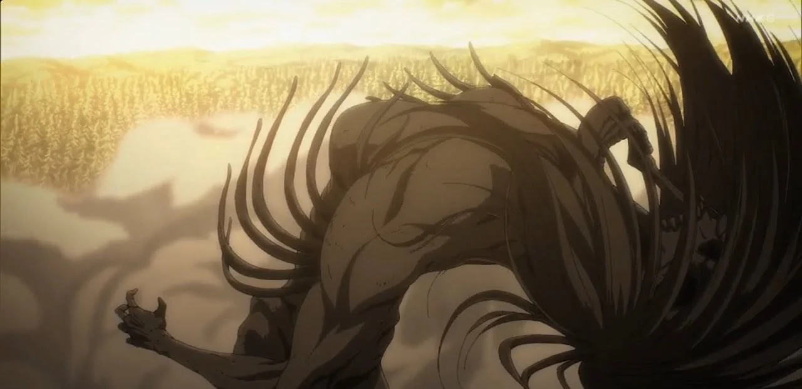
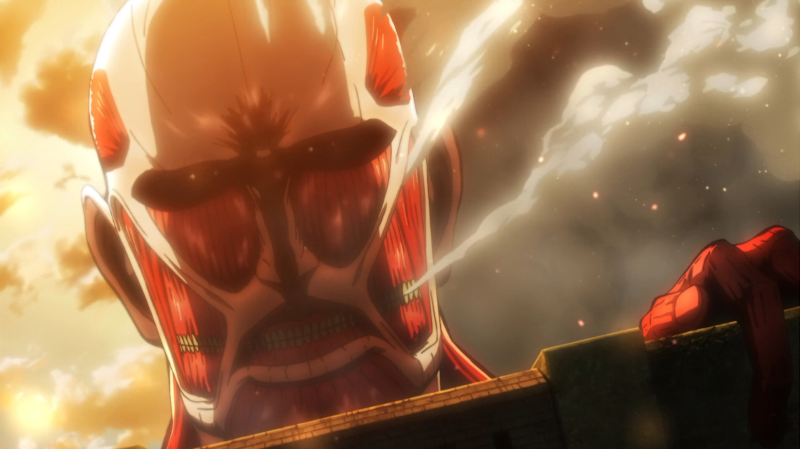
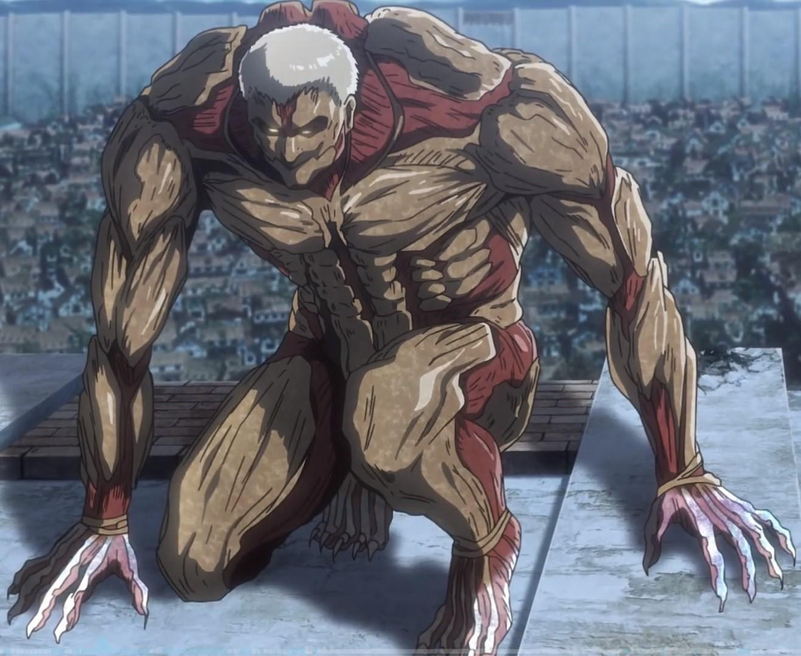
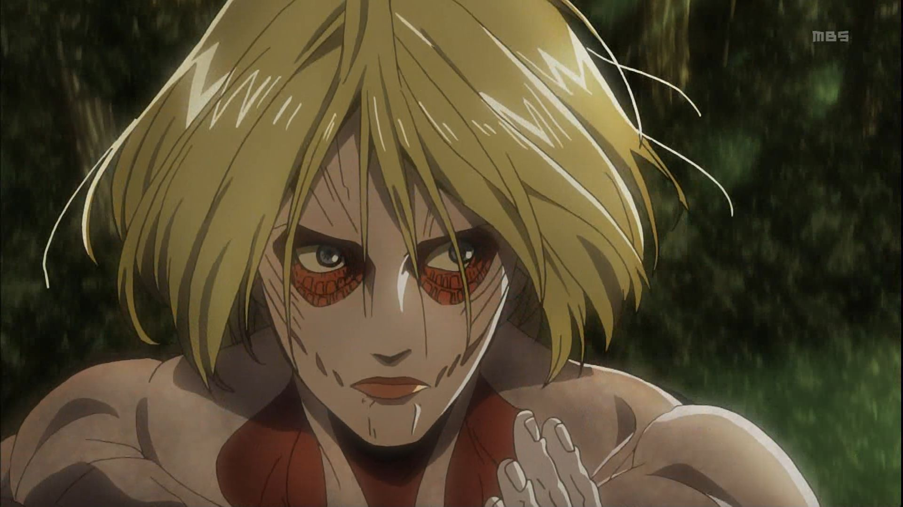
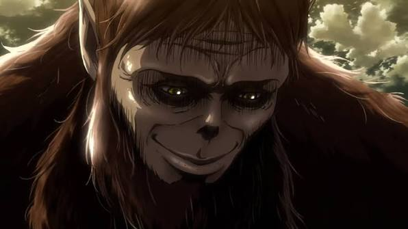
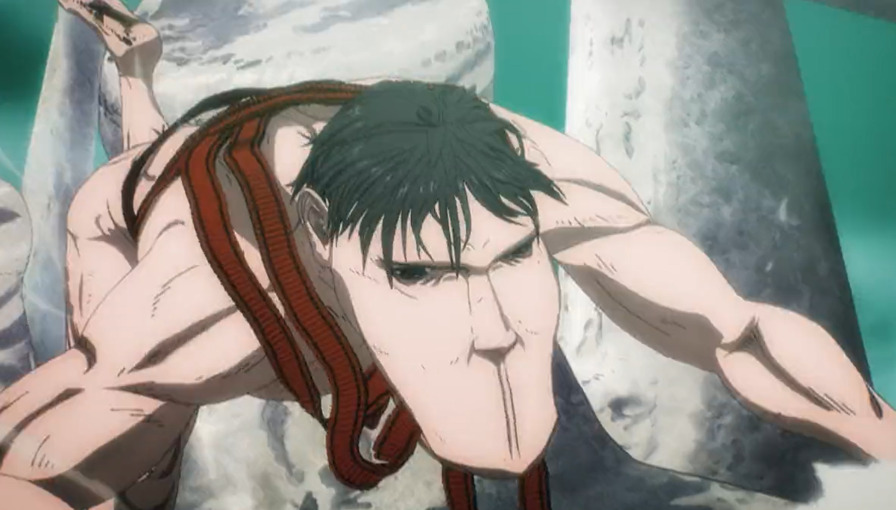
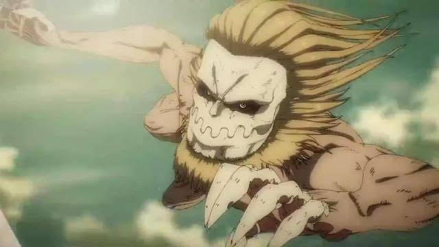

始祖巨人是九大巨人之一，同時也是史上第一位巨人，擁有創造跟控制其他巨人的能力，並且可以修改尤米爾之民的記憶

超大型巨人是九大巨人之一，以超大體型和控制蒸氣力量著稱

盔甲巨人是九大巨人之一，全身多處覆蓋硬化的組織，就如同穿了盔甲般的巨人

女巨人為九大巨人之一，具有吸引一般巨人的能力

野獸型巨人是九大巨人之一，身高推定為17米級的野獸型巨人，四肢具有長毛，外型長得像猿，擁有極高的智慧

車力巨人是九大巨人之一，為四足行走型，具有很好的速度跟耐性

顎之巨人是九大巨人之一， 擁有兇猛的下巴和指甲，由於體積小，它也被稱為所有最快的巨人
戰槌巨人是九大巨人之一，擁有製造出大量各種破化物質的能力
進擊的巨人是九大巨人之一，能看見「未來繼承者」的記憶，並透過「路」與歷代宿主的記憶相連